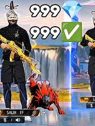

all about free fire
In Free Fire, players control a character in a third-person perspective. The fire button allows them to shoot and throw items. The character can perform actions such as jumping, crawling, and lying down. During gameplay, players can utilize the "Gloo Wall" grenade as a form of cover to protect against damage.
free fire diamonds
There isn't a specific "Free Fire 999 Diamonds" history because diamonds are a standard in-game currency in Free Fire, and the number 999 refers to a typical amount purchased rather than a special historical event or item. Diamonds are bought with real money to acquire exclusive in-game items like character outfits and weapon skins, distinguishing them from the free gold currency.

Are you a Free Fire fan dreaming of unlocking awesome skins, elite passes, and cool characters—without spending money? You’re not alone! In 2025, free diamonds in Free Fire are still the hottest currency every gamer wants, and the good news is: you can get them safely and without hacks. 🙌
This guide is packed with realistic, secure, and fun methods to help you earn diamonds while leveling up your game. Whether you’re into mobile gaming, love finding the best gaming deals, or just want to know how to get free stuff in games, this is your go-to resource.
Getting free diamonds in Free Fire takes time, effort, and strategy—just like winning a game. But trust us, it feels way better when you’ve earned it fair and square. 💪
And remember, you’re also learning money management, digital responsibility, and how to spot good gaming deals—skills that go beyond gaming.
💎Diamonds generator free fire